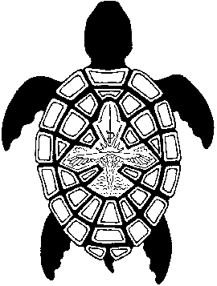

The Sonoran
Desert Toad
The Sonoran
Desert Toad
The Sonoran
Desert Toad
Bufo alvarius
A Personal Story
The short answer is that I came to know Bufo alvarius because of the 5-MeO-DMT present in it�s parotoid glands. After that, I was interested in this peculiar creature from the point of view of a nature lover. Since my childhood, I've always had a fondness for frogs and toads. Every summer since I was three or four, our family vacationed on a lake in the Adirondack Mountains in Upstate New York (USA). My brothers and I became avid frog hunters - all kinds of species were everywhere! I�ve always had a great appreciation for the wilderness and wild life.
The long answer is that I first learned of Bufo alvarius from an article in the most recent Newsweek, June 15, 1992. I was in Connecticut at the time. Newsweek reported that the toad had hallucinogenic properties. I had never heard of such a thing. I thought this was very odd but didn't think much more about it. What I didn't realize at the time was that I was about to have an intimate encounter with this animal. I was in the process of moving to Arizona, and two weeks later, Bufo alvarius was jumping across my path. At first I was horrified by it's size. I'd never seen a toad so large, or one that could gallop so fast! I was staying with some friends at the Peyote Way Church of God in Klondyke, Arizona north of Tucson. Taylor, who was also staying there at the time was trying to tell me that this toad was psychedelic. I still hadn't put two and two together. I argued with him because the picture in Newsweek showed a yellow-orange colored Bufo alvarius and these toads here were definitely green. He proceeded to pick one up and carried it over to a car where he squeezed the glands on it's head and shot the venom onto the windshield. After it dried, he scraped it off and smoked it! I watched him do this a couple of times over the next few days and he was insistent that I try it. I didn't want anything to do with it. Finally, curiosity got the better of me. He just seemed to be having the time of his life. Here's how I remember it:
The first two times I tried smoking the toad, I took relatively small hits because I was a little apprehensive about what its affects would be. Basically, one gets a huge rush which then subsides after a couple of minutes and then it disappears leaving no apparent side effects. So after the first two times, I felt quite comfortable with the experience and when we did some more the next night, I toked on the pipe long and hard. Now, because none of us knew anything about proper dosage, there was easily more than a gram of venom in that pipe as we had milked a number of toads! I was still inhaling as the effects began to overtake me. Oh my God! I thought had killed myself. I quickly pushed the pipe and lighter into Taylor's hands and breathed like a feverish maniac to get the smoke out of my lungs. The experience came on immediately and was so incredibly intense! I looked up at the night sky in horror as I watched a tear open up to the sound of a large sheet of cellophane ripping apart. As the void opened up I felt like I was about to fall into it and die. I was so fucking scared, my mind was reeling. I thought, what is the one thing that can keep me screwed down to the Earth so that I won't be taken away? Love! I thought love will save me! So in this swirling world of melted chaos, I start blurting out "I need love!, I need love!" (Pretty silly, huh?) I remember feeling my hands in my hair and everything looked distorted like it had clear water running over it. Then I realized I was surrounded by the Church animals - I had two dogs on either side of me and a cat in my lap - and Reid was behind me with his hands on my shoulders. Holy shit did those animals tune into my energy! When I finally realized that I was still on Earth and I wasn�t dead, I burst into tears! Ten minutes later, I was back to baseline. It is so hard to describe in words the experience of the toad. To say I was completely overwhelmed is an understatement. Somehow, I felt like I had experienced God and now I knew - with absolute certainty - that God exists. (These days I'm not so sure what that means.)
The only other thing I'd ever experienced like toad venom before in my life was when I took three hits of blotter acid at once and lost my mind for a couple of hours at a Grateful Dead concert. It was a terrifying experience because I thought I was dead or about to be completely removed from the world as I knew it. I had completely lost touch because I couldn't distinguish between my hallucinations and consensual reality. For most people, experiences like these might make them never touch a psychedelic again. But I smoked toad venom many, many more times again to come to terms with the fear and the fact that after a few minutes, I'm right back to baseline. And I'm not dead. How could an experience so dramatic disappear so rapidly? I also turned on anyone who was willing to try it. I've seen somewhere around fifty people smoke toad venom and they all had an intense experience. Except for Curtis. For some crazy fucked up reason, Curtis was completely immune to its effects. He could take the biggest hit of the same shit everyone else was seeing God on and get nothing. Weird. He was the only one though.
So, in this weird way, this "near death" experience with toad venom changed my whole outlook on life. I moved to Phoenix a few days later and my interest in the toad shifted. I wanted to know more about this mysterious creature. I had so many questions but no one seemed to have any answers. After awhile I forgot about it. Years later, I got an Internet computer and started digging around the Web to see what I could find out about the toad from the Net. This Web site is the result of my research efforts and my desire to provide the truth to those who seek it.
SOME TOAD CORRESPONDENCE:
7/19/92
Tim:
I just wanted to write to you to fill you in on what has transpired. I think I have finally found what I was
looking for from Peyote and mushrooms, only I have gotten the knowledge experience from a Toad! Did you by
any chance see the June 15, 1992 Newsweek article called Vision Quest? In the article they mention the
psychoactive Toad called Bufo alvarius. Well, this "Colorado River Toad" is indigenous to the area where the
Church is located. The Toad has glands on its body that contain a thick white substance which is toxic to
its predators and keeps the toad from being eaten. This substance can be milked from the Toad by squeezing
its porous glands, and this is what we did. We then allowed the stuff to dry and then we scraped it up and
put it in a pipe and smoked it. The first two times I tried smoking the Toad, I took relatively small hits
because I was a little apprehensive about what its affects would be. Basically, one gets a huge rush which
then subsides after about a minute and then disappears completely after about five minutes. There are no
side effects other than the memory of what one has experienced. It is my understanding that this Toad venom
is nature's equivalent to DMT. So after smoking the Toad venom for the first two times, I felt quite
comfortable with the experience and when we did some more another night, I toked on the pipe long and hard.
Wow! I have never experienced anything like it before in my life. It made all my previous trips and insights
seem trivial. It was like the difference between jumping off a small stool and landing on the kitchen floor,
and actually being able to fly through the air. I now have the absolute knowledge that God does exist. There
is not any doubt in my mind at all. Although I can not say very much in the way of describing God, I do know
that this is the glue that is holding "everything" together:
"little wheel turn by the fire and rod,
big wheel turn by the grace of God"
The Mind of God, the Thought of God, is the force, the energy that creates the life of the universe and the
cradle of the Earth we know as home. It is so hard to describe in words the experience of the Toad. I have
never soared to such inner depths into my mind and space. I was teetering on the edge of death's doorway and
experienced so much truth in just a couple of minutes that it completely overwhelmed me. The greatest thing
I felt was the Love of God holding me in place; keeping me screwed down to the Earth. The Love was so great
and pure that afterward I cried at my own limited ability to feel and understand such great love from people
and to express it to other people. Love is the seat of creation and empowerment.
Maybe you think I'm strange for thinking these things or even more fucked up for putting them in writing to
you, but this is what I actually wrote the next day after having had the Toad experience.
8/1/92
Tim:
I have sent you some of the Toad venom. I have found that an amount equivalent to the size of 3 or 4 match
heads is an appropriate dose, although, you may want to experiment. Dedicate a clean pipe to the cause and
when you smoke it hold a continuous flame to the bowl otherwise it will go out and you will be sucking air.
Hold in the smoke for as long as you think you can. I recommend that you smoke it outside in a secluded
area, maybe at night under the stars, and that you focus on things like the Earth, beauty, or God. It won't
kill you, either, even if you think it is at the time. You will experience an intense rush (if you don't,
you didn't smoke enough) and then you will come down and the whole thing will be all over in a couple of
minutes. Enjoy.
8/92
Bob:
I just wanted to sit down and describe some of what happened on my first experience with the Toad. Thanks
for the sample! I fasted from dinner Thursday night until seven Friday night, dosed my body with vitamin C,
E, B's, etc., and settled my mind, and relaxed in my room with a little Floyd playing. I nixed the outdoor
setting as I wanted a place where I was very comfortable mentally and physically, someplace familiar. I
placed what looked like a good amount (as per your instructions) in my special pipe, then added a few small
granules more. Using a small propane torch with a small soft flame I heated the end of the tube until the
granules began to blacken, bubble, and smoke. Inhaling slowly produced a dense gray smoke curling up the
tube, that rapidly filled my lungs with a massive, smoke coming out of my nose, type hit. A real real big
hit. A hit like I was doing a one hit of pot. As soon as I finished inhaling I knew it was a big dose. The
visuals came on even before I could finish exhaling ten heartbeats later, and I only had time to shut off
the torch and put down the pipe before the world dissolved and I lost complete and total touch with reality.
It was the fastest, hardest trip I have ever had. The initial thirty seconds were overwhelming,
indescribable, and somewhat terrifying. I struggled to hold my shit together and relax... not to panic...
but the initial rush was to like riding a roller coaster. You know intellectually that roller coasters are
safe, but as you plunge downward from the precipice, thoughts of death steal in and shove your heart into
your throat. As you gain speed, you are forced to realize that there is no way out. you are committed. No
way to undo what you have just done. The only path is to ride it out. But the fucker just keeps gaining
speed, and for an eternity of split seconds, frozen in time, you say HOLY SHIT, and you are positive that
you can not go, or stand it any faster... but it goes, and goes, and goes, raging forward with you belted to
its back by puny straps, your sanity pushing its way up out of your pocket like a wallet. You hope to God
you don't lose it but there is no way you can let to now to stuff it back. Only after, can you laugh about
it and gain some sense of exhilaration at your seeming brush with destruction.
Reading this to myself it sounds as if I did not gain anything positive from the experience but that is
absolutely not true at all. It is just that it was so intense!
HOLY FUCKING SHIT
8/18/92
Tim:
Thanks a lot for the test tube pipe. The clay pipe that I have been using has proven to be inferior to your
method, and I have been contemplating an appropriate solution for a while now. Thanks for the answer.
Your description on the first page of your letter fucking tickled me to death! I couldn't stop the
delightful laughter. The analogy of the roller coaster description was brilliant. And the "holy fucking
shit" graphic says it all. I am intrigued that you did not experience anything mystical or profound. I am
finding that as I have been smoking more of the Toad, that element has been missing for me as well lately. I
am not sure what to make of this. I have been thinking that possibly I inadvertently set myself up for a
religious experience when I did that infamous hit. You see, when I did that hit that one powerful time, it
took me back to a dreadful experience that I had on three hits of fresh California blotter acid back in
1985. I was at an outdoor Grateful Dead concert in Maryland and I literally lost my mind. That tingling that
you got in your fingers after smoking the Toad (which I also experience) was coursing through my whole body
and I knew I was about to die. It was a state of mind that I shall never forget. I was "praying" not to be
taken yet and was passionately gripping the grass in desperation. Obviously, I didn't die and attributed
this to the friends I was with and the grace of God. So, when I did that powerful Toad hit the first
sensation I experienced was that same dreadful situation that I experienced at the Dead show and I was
fucking scared shitless. Naturally, my first reaction was that I was surely going to die this time,
especially since it came on so fast and hard. In my panic, I was prepared to touch God and on some level, I
believe I did. Now that I have become well acquainted with this fantastic experience, possibly, it is
loosing some of the mystical slant. I am not, however, going to assume that this spiritual state is now
unattainable.
For now, I am going to put the Toad on a self and hold onto it. I am currently taking instruction in Tai
Chi, and when my ability has sufficiently progressed, I am going to experiment with the Toad and body
movement and flow, to see what effect Tai Chi has in directing and channeling the spirit energy. I would
like to perform the Tai Chi sets, or movements, under the influence of the Toad because I am getting a sense
that movement and action can direct the experience. Also, when I finally have some magic mushrooms, I would
like to smoke the Toad during a mushroom trip. Anyway, the possibilities are wide open.
1/9/93
Tim:
I was glad to get your letter. It's kind of strange in a way how we correspond like pen pals, exchanging
ideas about drugs and the high life. I am grateful for the opportunity to be able to put all this stuff in
writing, and that we can do it in the form of a letter to one another is both novel and satisfying.
Interestingly enough, about four weeks ago I took another trip with the Toad. It was a Sunday morning and I
was having a long sleep-in when I was awaken by a phone call from this woman I know in Scottsdale who I had
not heard from in a while. We had a good talk and afterwards I was feeling upbeat and well rested. I knew
that I was going to have an easy day of volunteer work at the Co-op on this day and I had a very relaxed
frame of mind. It was obviously a perfect time for a committed Toad experience. Since I now had a greater
sense of what to expect from a committed Toad smoke, I got my self properly situated in front of my alter
with my gas camping stove and my stinky resinated test tube pipe. Most importantly, I selected a piece of
music that I had been listening to over and over for the past two weeks; it was one of those jams that I
just couldn't listen to enough by Pat Metheny Group from the release, Offramp, track number four, the tune
Eighteen. I set the CD player so that just after I inhaled the hit the song would come on.
I took the biggest hit of Toad from that pipe that I have ever taken to date; smoke was coming out my ears!
As the rush came on and I finally blew the rest of the smoke out of my lungs, the world around me began to
melt. My first reaction was terror because I was instantly in that dreadful space I had been on during my
last mushroom experience: I saw not only the room melting into chaos, but when I looked down at my own
hands, they too were deforming and blending into the chaos of totality as the molecules of my body appeared
to be melting into the disintegrating matter of the universe. Instantly, I bolted upright in a panic. "Oh my
God"! I fell face down on the ground and feverishly prayed to God for a future. Then, I remembered what a
friend had said to me about his experience with the Toad smoke. He said it made him ultra hyper and he would
run like a mad man around the house and out into the yard. Some other friends in my circle confirmed this.
Since I had been to the Grateful Dead concerts just the weekend before (two general admission, outdoor,
afternoon shows, beautiful weather, beautiful people), I was still very much in a dancing mode. So, with the
sound of Pat Metheny still playing, I allowed my head to be emptied of my limited thoughts and my fear and I
instead filled my head with the sound of beautiful music. This brought me into a centering and I danced so
passionately and with so much energy that I must have been bouncing off the walls. The Universe was
certainly having its way with me; I was definitely at once a part of the totality and at the same time
nonexistent, my life energy so tuned into to the molecular dance of chaos. Eighteen plays for 5:05 minutes
and when the song was over, I was still tripping, although not as hard. I had done it. I overcame the broken
ego trip and successfully experienced true bliss. After a few more minutes it was back to glorious normalcy
and I ate some organic rice with the mouth and taste buds of a new born infant; it tasted glorious and I had
the biggest fucking smile on my face all day!
3/14/93
Tim:
I haven't smoked any Toad myself since that last trip I described to you in my last letter but I have turned
on another four virgin pyschonauts as I have determined that with the small amount of venom that I had
acquired, I am only going to turn on people who have not yet had the Toad experience. I am still looking
forward to receiving the test tube pipes from you as I have a couple of people that need them. You are
absolutely correct in your method; burning the venom is wasteful and unnecessary, not to mention that it's
probably sacrilegious. Do you have anything interesting to report from the new batch of venom I last sent
you? By the way, with how many people have you shared the venom?
5/10/93
Ethan:
Two days ago, I did a committed dose of Toad medicine. This was one of the last two doses I had which I had
been saving for first time explorers only.... but I had to do it myself. It had been over five months since
I had had a religious dose of any type of psychedelic substance and events in my life had worked themselves
into a space where it was appropriate (and even necessary!) for me to receive some Universal Healing through
the channel of my beloved Toad medicine. You see, I had been badly hurt by a very sweet young lady.... she
took my heart away and then I found out that she was just a liar and a cheat.... I wasn't going to play her
game.... The deceit had gone on for a couple of days and when the reality of the situation finally burst
into my consciousness, the frustration and disappointment and anger that I was feeling had me worked into a
restless fury of raging energy.... I was ready to conquer, crush, or destroy anything that got in my way or
got me more pissed off.... then it occurred to me that I must smoke some Toad sweat, for two reasons; I
needed a good brain cleanse and more importantly, I knew that this was the space in which to reintroduce
myself to that crippling fear that I always experience on the Toad trip. I thought, my God, how can I do
this? This goes against all my dogma.... GOOD! said the other voice in my head.... this was not my
preconceived sacred space, my cute ritual ceremony, this was a hard, fast, real life pissed off, free
flowing rock slide of gut wrenching emotions.... and God damn it!, I am ALIVE!.... I took my glass pipe with
the Toad medicine inside and with my alcohol burner, I liberated its sacred essence and took it deep into my
lungs.... my head was so full of adrenaline from my furious rage that it wasn't until I had finally blown
the vapor from my body that the medicine started pushing its way into those wonderful spaces in my brain....
and then came the fear.... FUCK OFF! I said, this BULLSHIT is over!.... and the fear said, Oh we're quite
sorry, we thought you were somebody who gave a shit.... WELL I'M NOT AND YOU'RE TERRIBLY BORING SO FUCK
OFF!!.... and so it was simply not an issue.... once past the fear, I got into some very wonderful
spaces.... the Oneness of the Universe, the flow of life outside of time.... (words DO NOT do this
experience any justice).... Most importantly, I began to get complete with the experience of my loneliness
and the anger that it gave birth to.... I got to experience the weight of my needs and how they impact
others in my life.... I have gotten in touch with a very dark side of myself and these past couple of days
have been very healing....
5/11/95 (& 6/9/95)
A NEW DAWN
Three and a half years ago, I embarked on a quest. This, after much soul searching and the realization that my life was unsatisfactory. I had graduated college with a wonderful woman and a Bachelor's Degree. Fours years down the road, I had a stable and good paying job, I had begun taking graduate classes at night, and my future was looking like... an early grave. What was the problem? I felt empty inside, I didn't feel real and I didn't have a sense of my soul. So I went on a back packing excursion with Outward Bound in the mountains of Maine and New Hampshire and began getting in touch with my core self. After this two week experience, I returned to New Jersey and dismantled my life; I left my girlfriend of six years, quit my job, dropped out of graduate school, and moved all my possessions to my mother's house.
This is when my quest truly began for I felt that I had successfully freed myself of all my restrictions and limitations; the world was now completely open for me to explore myself and find my true potential. Because of my previous experiences in high school and college, I knew that a psychedelic, such as psilocybin mushrooms or peyote, especially at a high dose, could have the effect of abolishing my ego, which would allow me to look at my world with completely new eyes, as if I had been born again. I had the idea that this expanded awareness was the kind of experience I needed in order to receive direction for my new life. So that's what I set out for. I was on a vision quest and by the grace of God, I succeeded.
Last night, I was brought to a cross road (by a very beautiful and strong woman) and a new understanding crystallized in my mind: I had arrived. I had found everything I had been looking for when I left New Jersey, and then some. The pursuit of the psychedelic was a means. But I have been treating it as an ends for the past three years. When I left New Jersey, I asked psychedelics to show me what to do with my life. It delivered My0practics, natural foods, a holistic lifestyle, and a loving appreciation for my community. I asked psychedelics to show me God which was so frightening that at first I thought I would die. Then I learned how to replace this fear with love. Then I asked the psychedelics to show me more about love and received a teaching that I will never forget.
If you understand the concept of reincarnation, then you will understand the following illustration: I feel like an older man of seventy years and God has said to me, "Hey, your time is up, let's move on." And I say to God, "But I am still strong and healthy. Why, I'll live another ten or twenty years!" And God says, "Well, yes. You could. But right now, there is a baby that is going to be born, and the world could really use your soul in that baby. How would you really like to grow, and evolve even deeper in my love?" And I say, "Oh, I see what you're saying. I could keep on using psychedelics and be fine on that path for some more time yet. But you are offering me a gift of true renewal, a path with a much higher purpose."
I have gotten from psychedelics that which I required and now it is time to move on. I must fully close this door in order for the next door to open. Psychedelics were tools that brought me to myself. The answers are to be found, no longer through substances, but through my self. This time in my life is a time of unparalleled significance; a greater future awaits with still higher goals, and I am poised and ready for action. All of my creative energy is directed into the Healing Arts, for, I am to be a healer of extraordinary proportions. I say this now although I am only beginning to barely fathom the true nature of healing. It will not be of me, and it may not even come through me. But if I can assist people to heal themselves, then, it is my goal to master the energy available to humans so that I may direct it into those areas that are ready to receive healing. I have lifetimes of learning yet to acquire; this is my imperative. My course has been set and I can afford no distractions.
